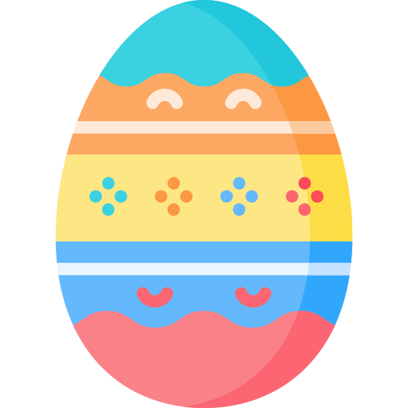

mass = penguins["body_mass_g"]5 Una variable numérica
Igual que en el apartado anterior estudiamos una variable categórica, en este apartado se describen los métodos básicos para explorar y analizar una variable numérica.
Analizaremos en concreto la variable body_mass_g de nuestra hoja de datos, para conocer la distribución de los pesos de los pingüinos.
Empezamos seleccionando la variable de interés y almacenando el resultado en un nuevo objeto de nombre mass.
5.1 El método describe()
El método describe() que usamos en la sección anterior para una variable categórica, también puede aplicarse a variables numéricas.
Si lo aplicamos a mass obtenemos el siguiente resultado:
mass.describe()count 342.000000
mean 4201.754386
std 801.954536
min 2700.000000
25% 3550.000000
50% 4050.000000
75% 4750.000000
max 6300.000000
Name: body_mass_g, dtype: float64La información que obtenemos de la salida anterior sobre la distribución del peso de los pingüinos es la siguiente:
| Fragmento de la salida | Significado |
|---|---|
count 342.000000 |
Hay 342 valores no nulos, así que no se conoce el peso de dos pingüinos. |
mean 4201.754386 |
El peso medio de los pingüinos es \(4\) kilogramos y \(201\) gramos. |
std 801.954536 |
La desviación estandar del peso de los pinguinos es \(801\) gramos. |
min 2700.000000 |
El pingüino que menos pesa, pesa \(2\) kilos y \(700\) gramos. |
25% 3550.000000 |
El \(25\%\) de los pingüinos pesa menos de \(3\) kilos y \(550\) gramos (y el \(75\%\) restante más). Este valor se conoce como cuantil 0.25 o primer cuartil. |
50% 4050.000000 |
El \(50\%\) de los pingüinos pesa menos de \(4\) kilos y \(50\) gramos (y el \(50\%\) restante más). Este valor se llama cuantil 0.5, segundo cuartil o mediana. |
75% 4750.000000 |
El \(75\%\) de los pingüinos pesa menos de \(4\) kilos y \(750\) gramos (y el \(25\%\) restante más). Este valor se llama cuantil 0.75 o tercer cuartil. |
max 6300.000000 |
El pingüino que más pesa, pesa \(6\) kilos y \(300\) gramos. |
Ejercicio 5.1 Utiliza el método describe() para obtener información sobre la distribución de la longitud de las alas de los pingüinos.
5.2 Histograma
Los histogramas son uno de los gráficos más comunes e informativos para describir la distribución de una variable continua. Para crear un histograma se representa en el eje x el rango de valores de la variable, se divide ese rango en intervalos de la misma longitud, y se dibuja para cada intervalo una barra de altura igual al número de valores que caen en ese intervalo.
El siguiente código crea un histograma para el peso de los pingüinos:
sns.histplot(data=penguins, x="body_mass_g");Para realizar un histograma usa la función histplot() del paquete seaborn, e indica:
- El nombre de la hoja de datos como valor del argumento
data. - El nombre de la variable como valor del argumento
x.
Ejercicio 5.2 Realiza un histograma para la longitud de las alas de los pingüinos.
5.3 Diagrama de caja y bigotes
Otro tipo de gráficos para variables numéricas son los llamados diagramas de caja o de caja y bigotes.
Ejecuta el siguiente código para crear un diagrama de caja y bigotes para el peso de los pingüinos.
sns.boxplot(data=penguins, y="body_mass_g");La caja se construye usando los cuartiles de la variable.
Y los bigotes se extienden desde los extremos de la caja hasta los valores mínimo y máximo, exceptuando los valores que se clasifican como outliers.

Si llegas el primero a este punto de la práctica, avísame para que explique el criterio que se usa para determinar los outliers, y haga un diagrama de caja y bigotes en el que aparezca un outlier.
Para realizar un diagrama de caja y bigotes usa la función boxplot() del paquete seaborn e indica:
- El nombre de la hoja de datos como valor del argumento
data. - El nombre de la variable como valor del argumento
y.
Ejercicio 5.3 Realiza un diagrama de caja y bigotes para la longitud de las alas de los pingüinos.